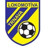

Posledný zápasU13 B Mladší žiaci
 FK Senica U13 Bdomáci
FK Senica U13 BdomáciVýsledok 2:0
 OFK Dynamo Malženice Bhostia
OFK Dynamo Malženice BhostiaVýhrapolčas 1:0
Návrh webu · nie je to oficiálna stránka klubu
III. liga U13 ZsFZ, 8. miesto z 12
Posledný zápasU13 B Mladší žiaci
FK Senica U13 BdomáciVýsledok 2:0
OFK Dynamo Malženice BhostiaVýhrapolčas 1:0
4–2–5výhry, remízy a prehry vo všetkých súťažiach, skóre 28:41

FK Lokomotíva Trnava BIII. liga U13 ZsFZ
| # | Tím | Z | V | R | P | Skóre | B |
|---|---|---|---|---|---|---|---|
| 1 | FK Lokomotíva Trnava B | 11 | 10 | 1 | 0 | 60:7 | 31 |
| 2 | 11 | 9 | 1 | 1 | 49:14 | 28 | |
| 3 | 11 | 6 | 1 | 4 | 30:30 | 19 | |
| 4 | 11 | 6 | 0 | 5 | 34:30 | 18 | |
| 5 | 11 | 5 | 2 | 4 | 43:16 | 17 | |
| 6 | 11 | 5 | 1 | 5 | 27:30 | 16 | |
| 7 | 11 | 5 | 1 | 5 | 36:38 | 16 | |
| 8 | 11 | 4 | 2 | 5 | 28:41 | 14 | |
| 9 | 11 | 4 | 0 | 7 | 27:41 | 12 | |
| 10 | 11 | 3 | 3 | 5 | 28:35 | 12 | |
| 11 | 11 | 3 | 0 | 8 | 17:44 | 9 | |
| 12 | 11 | 0 | 0 | 11 | 11:64 | 0 |
Hráči, ktorí v kalendárnom roku 2026 nastúpili alebo boli v nominácii na zápas (podľa Sportnetu). Pri mládeži uvádzame len mená.